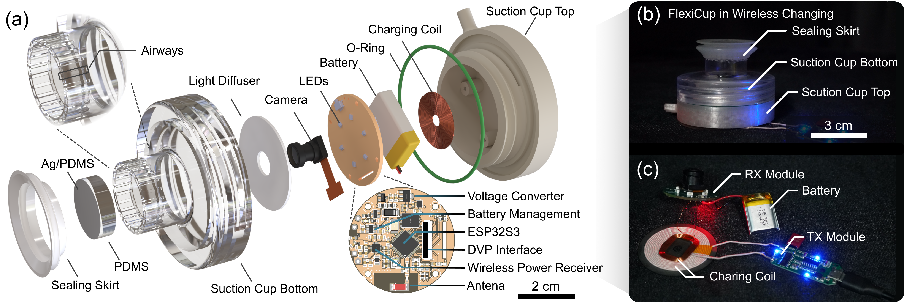
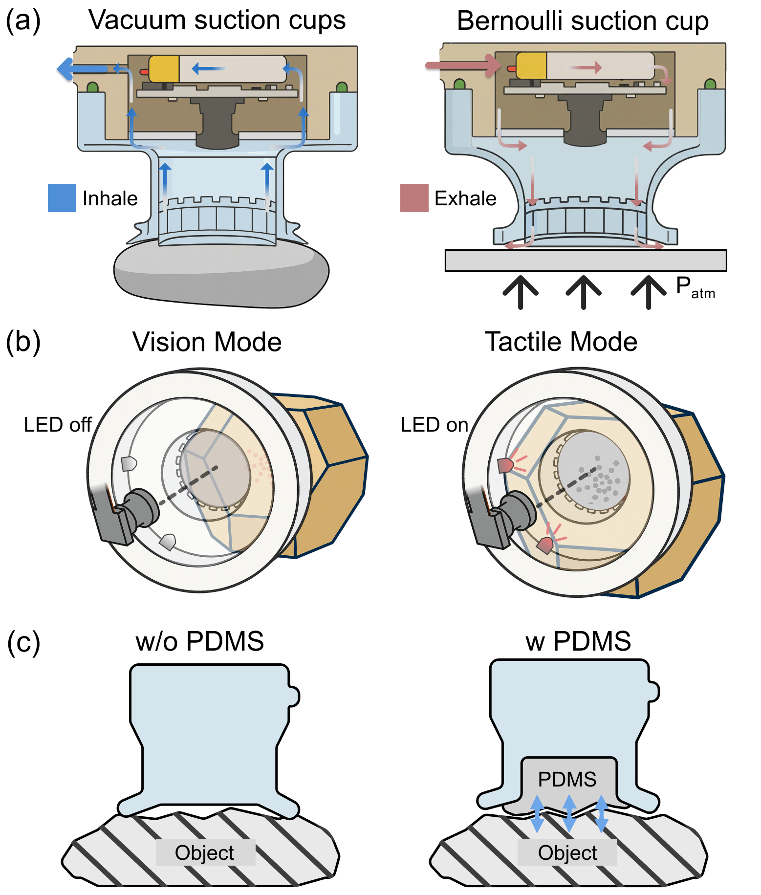
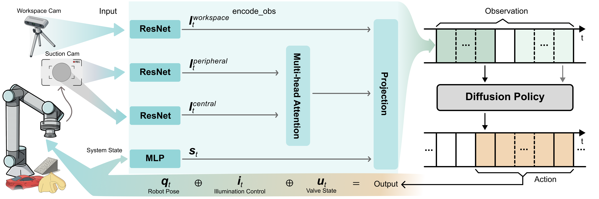
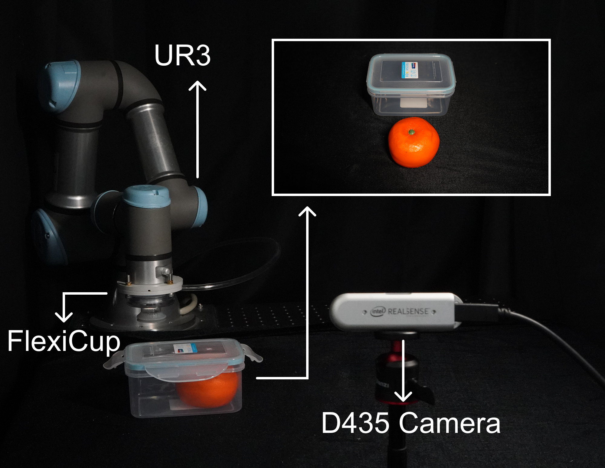

Key Contributions
- Wireless dual mode suction system: We develop a fully wireless suction cup supporting both vacuum and Bernoulli mechanisms through modular configurations, with integrated battery power and wireless communication achieving 60 Hz image streaming.
- Unified visuotactile sensing: A single 180° fisheye camera enables dynamic switching between environmental vision and precise tactile perception through illumination control, while maintaining peripheral vision for spatial context.
- Multimodal learning framework: We develop diffusion policies with multihead attention to integrate observations across workspace and dual zone suction cameras, handling dynamic modality transitions between vision and tactile sensing.
- Experimental validation: Evaluation on inclined transport (73.3% success) and orange extraction (66.7% success) demonstrates the hardware and algorithm integration, with ablation studies confirming critical component contributions.
System Architecture
System architecture and wireless integration. (a) Exploded view showing modular component integration including airways, optical system, electronics, and mechanical assembly. (b) Complete system wireless charging configuration. (c) Modular core components (PCB, battery, charging coil) extracted for standalone charging.
Functional Mechanisms
FlexiCup functional mechanisms. (a) Cross-sectional comparison of vacuum (left) and Bernoulli (right) operation modes. (b) Vision and tactile modality switching with LED control. (c) Sealing configurations without and with PDMS membrane.
Dual-Mode Demonstrations

FlexiCup operational demonstrations and modular design. (a) Four modular suction cup bottom configurations. (b) Vacuum mode orange extraction with visuotactile switching demonstration. (c) Bernoulli mode PCB manipulation with visuotactile switching demonstration.
Multimodal Performance

Multi-modal performance characterization. (a) Vision and tactile sensing comparison across diverse objects showing environmental vision (top) and tactile mode (bottom) for five test objects. (b) Model performance comparison showing accuracy rates for vision-only, tactile-only, and multihead attention approaches. (c) Confusion matrix for multihead attention model demonstrating classification performance across all object categories.
Learning Framework
FlexiCup learning framework architecture. The system processes multimodal inputs through parallel encoders: workspace camera and dual suction camera views—peripheral view and central view—are encoded via ResNet-18, while system state is processed through an MLP. The peripheral and central features undergo multihead attention for interaction between views, then combined with workspace information. The integrated observation drives a diffusion policy that outputs robot pose, illumination control, and valve state for contact-aware manipulation.
Experimental Setup
Experimental setup showing FlexiCup mounted on UR3 robot with D435 external camera.
Task Demonstrations

Experimental task demonstrations showing inclined transport and orange extraction sequences with multimodal sensing integration.